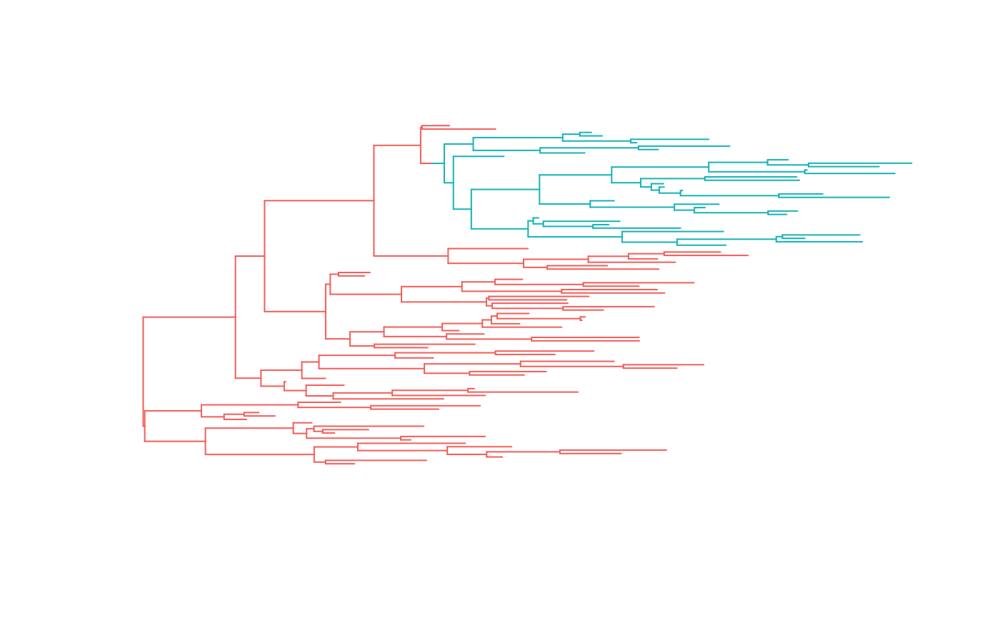

vignettes/PCMBase.Rmd
PCMBase.RmdThe input data for the phylogenetic comparative methods covered in the PCMBase package consists of a phylogenetic tree of \(N\) tips and a \(k\times N\) matrix, \(X\) of observed trait-values, where \(k\) is the number of traits. The matrix \(X\) can contain NAs corresponding to missing measurements and NaN’s corresponding to non-existing traits for some of the tips.
A model is defined by a set of parameters and a rule stating how these parameters should be fit to the data. For example, a multivariate phylogenetic Ornstein-Uhlenbeck mixed model has the following parameters:
X0 : a \(k\)-vector of initial values;H : a \(k\times k\) matrix denoting the selection strength of the process;Theta : a \(k\)-vector of long-term optimal trait values;Sigma : a \(k\times k\) matrix denoting the stochastic drift variance-covariances;Sigmae : a \(k\times k\) matrix denoting the non-genetic (non-heritable) variance covariance;The rule defining how the above OU-parameters should be fit to the data is defined by the multivariate OU Gaussian distribution, as described in (insert reference); Currently, PCMBase supports multivariate Gaussian models satisfying the following two conditions:
In PCMBase, models are specified as S3 objects, i.e. ordinary R-lists with a class attribute. The base S3 class of all models is called "PCM", which is inherited by more specific model-classes. Let us create a BM PCM for two traits:
modelBM <- PCM(model = "BM", k = 2)Printing the model object shows a short verbal description, the S3-class, the number of traits, k, the number of numerical parameters of the model, p, the model regimes and the current values of the parameters for each regime (more on regimes in the next sub-section):
modelBM## Brownian motion model
## S3 class: BM, GaussianPCM, PCM; k=2; p=8; regimes: 1. Parameters/sub-models:
## X0 (VectorParameter, _Global, numeric; trait values at the root):
## [1] 0 0
## Sigma_x (MatrixParameter, _UpperTriangularWithDiagonal, _WithNonNegativeDiagonal; Choleski factor of the unit-time variance rate):
## , , 1
##
## [,1] [,2]
## [1,] 0 0
## [2,] 0 0
##
## Sigmae_x (MatrixParameter, _UpperTriangularWithDiagonal, _WithNonNegativeDiagonal; Choleski factor of the non-heritable variance or the variance of the measurement error):
## , , 1
##
## [,1] [,2]
## [1,] 0 0
## [2,] 0 0
##
## One may wonder why in the above description, p = 8 instead of 10 (see also ?PCMParamCount). The reason is that both, the matrix Sigma and the matrix Sigmae, are symmetric matrices and their matching off-diagonal elements are counted only one time.
Model regimes are different models associated with different branches of the phylogenetic tree. This is a powerful concept allowing to model different evolutionary modes on different lineages on the tree. Let us create a 2-trait BM model with two regimes called a and b:
modelBM.ab <- PCM("BM", k = 2, regimes = c("a", "b"))
modelBM.ab## Brownian motion model
## S3 class: BM, GaussianPCM, PCM; k=2; p=14; regimes: a, b. Parameters/sub-models:
## X0 (VectorParameter, _Global, numeric; trait values at the root):
## [1] 0 0
## Sigma_x (MatrixParameter, _UpperTriangularWithDiagonal, _WithNonNegativeDiagonal; Choleski factor of the unit-time variance rate):
## , , a
##
## [,1] [,2]
## [1,] 0 0
## [2,] 0 0
##
## , , b
##
## [,1] [,2]
## [1,] 0 0
## [2,] 0 0
##
## Sigmae_x (MatrixParameter, _UpperTriangularWithDiagonal, _WithNonNegativeDiagonal; Choleski factor of the non-heritable variance or the variance of the measurement error):
## , , a
##
## [,1] [,2]
## [1,] 0 0
## [2,] 0 0
##
## , , b
##
## [,1] [,2]
## [1,] 0 0
## [2,] 0 0
##
## Now, we can set some different values for the parameters of the model we’ve just created. First, let us specify an initial value vector different from the default 0-vector:
modelBM.ab$X0[] <- c(5, 2)X0 is defined as a parameter with S3 class class(modelBM.ab$X0). This specifies that X0 is global vector parameter shared by all model regimes. This is also the reason, why the number of parameters is not the double of the number of parameters in the first model:
PCMParamCount(modelBM)## [1] 8PCMParamCount(modelBM.ab)## [1] 14The other parameters, Sigma and Sigmae are local for each regime:
# in regime 'a' the traits evolve according to two independent BM processes (starting from the global vecto X0).
modelBM.ab$Sigma_x[,, "a"] <- rbind(c(1.6, 0),
c(0, 2.4))
modelBM.ab$Sigmae_x[,, "a"] <- rbind(c(.1, 0),
c(0, .4))
# in regime 'b' there is a correlation between the traits
modelBM.ab$Sigma_x[,, "b"] <- rbind(c(1.6, .8),
c(.8, 2.4))
modelBM.ab$Sigmae_x[,, "b"] <- rbind(c(.1, 0),
c(0, .4))The above way of setting values for model parameters, while human readable, is not handy during model fitting procedures, such as likelihood maximization. Thus, there is another way to set (or get) the model parameter values from a numerical vector:
param <- double(PCMParamCount(modelBM.ab))
# load the current model parameters into param
PCMParamLoadOrStore(modelBM.ab, param, offset=0, load=FALSE)## [1] 14print(param)## [1] 5.0 2.0 1.6 0.0 2.4 1.6 0.8 2.4 0.1 0.0 0.4 0.1 0.0 0.4# modify slightly the model parameters
param2 <- jitter(param)
print(param2)## [1] 5.014382755 2.008217233 1.612403441 -0.005753739 2.380490553
## [6] 1.608073459 0.798419400 2.411975167 0.115953306 -0.019154019
## [11] 0.406794558 0.093007691 -0.009950226 0.395757452# set the new parameter vector
PCMParamLoadOrStore(modelBM.ab, param2, offset = 0, load=TRUE)## [1] 14print(modelBM.ab)## Brownian motion model
## S3 class: BM, GaussianPCM, PCM; k=2; p=14; regimes: a, b. Parameters/sub-models:
## X0 (VectorParameter, _Global, numeric; trait values at the root):
## [1] 5.014383 2.008217
## Sigma_x (MatrixParameter, _UpperTriangularWithDiagonal, _WithNonNegativeDiagonal; Choleski factor of the unit-time variance rate):
## , , a
##
## [,1] [,2]
## [1,] 1.612403 -0.005753739
## [2,] 0.000000 2.380490553
##
## , , b
##
## [,1] [,2]
## [1,] 1.608073 0.7984194
## [2,] 0.800000 2.4119752
##
## Sigmae_x (MatrixParameter, _UpperTriangularWithDiagonal, _WithNonNegativeDiagonal; Choleski factor of the non-heritable variance or the variance of the measurement error):
## , , a
##
## [,1] [,2]
## [1,] 0.1159533 -0.01915402
## [2,] 0.0000000 0.40679456
##
## , , b
##
## [,1] [,2]
## [1,] 0.09300769 -0.009950226
## [2,] 0.00000000 0.395757452
##
## The first functionality of the PCMBase package is to provide an easy way to simulate multiple trait data on a tree under a given (possibly multiple regime) PCM.
For this example, first we simulate a birth death tree with two regimes “a” and “b” using the phytools R-package:
# make results reproducible
set.seed(2)
# number of regimes
R <- 2
# number of extant tips
N <- 100
tree.a <- rtree(n=N)
PCMTreeSetLabels(tree.a)
PCMTreeSetDefaultRegime(tree.a, regime = "a")
lstDesc <- PCMTreeListDescendants(tree.a)
splitNode <- names(lstDesc)[which(sapply(lstDesc, length) > N/2 & sapply(lstDesc, length) < 2*N/3)][1]
tree.ab <- PCMTreeInsertSingletons(tree.a, nodes = as.integer(splitNode),
positions = PCMTreeGetBranchLength(tree.a, as.integer(splitNode))/2)
PCMTreeSetRegimes(tree.ab, nodes = splitNode, regimes = c("a", "b"), inplace = TRUE)
# Currently this is causing a failure of the pkgdown::build_site(), so we use the
# ape's tree-plotting function
# PCMTreePlot(tree.ab)
palette <- PCMColorPalette(2, c("a", "b"))
plot(tree.ab, show.tip.label=FALSE, edge.color = palette[tree.ab$edge.regime])
Now we can simulate data on the tree using the modelBM.ab$X0 as a starting value:
traits <- PCMSim(tree.ab, modelBM.ab, modelBM.ab$X0)Calculating a model likelihood for a given tree and data is the other key functionality of the PCMBase package.
PCMLik(traits, tree.ab, modelBM.ab)## [1] -409.5303
## attr(,"X0")
## [1] 5.014383 2.008217
## attr(,"class")
## [1] "VectorParameter" "_Global" "numeric"
## attr(,"description")
## [1] "trait values at the root"For faster and repeated likelihood evaluation, I recommend creating a likelihood function for a given data, tree and model object. Passing this function object to optim would save the need for pre-processing the data and tree at every likelihood evaluation.
# a function of a numerical parameter vector:
likFun <- PCMCreateLikelihood(traits, tree.ab, modelBM.ab)
likFun(param2)## [1] -409.5303
## attr(,"X0")
## [1] 5.014383 2.008217
## attr(,"class")
## [1] "VectorParameter" "_Global" "numeric"
## attr(,"description")
## [1] "trait values at the root"